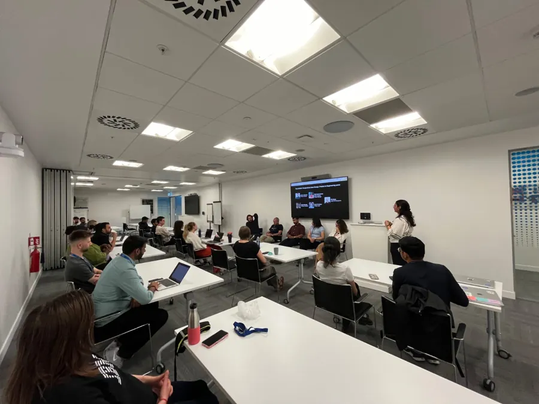
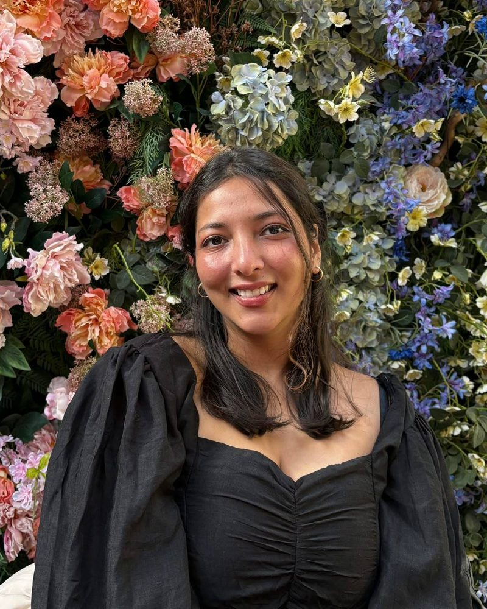
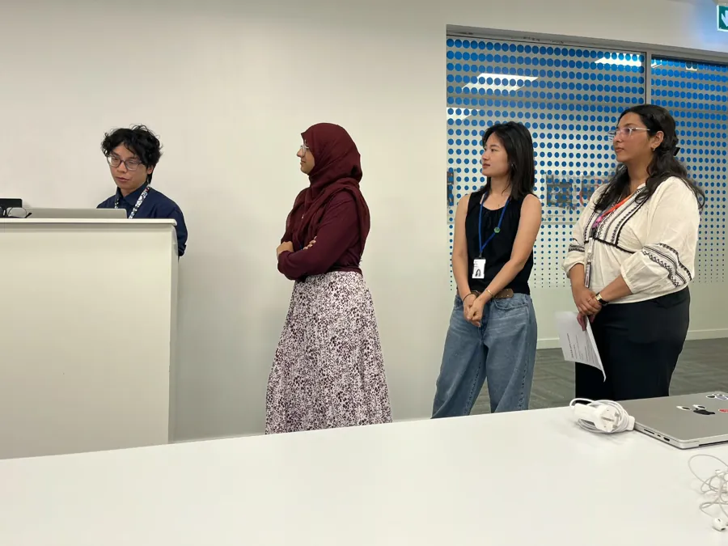
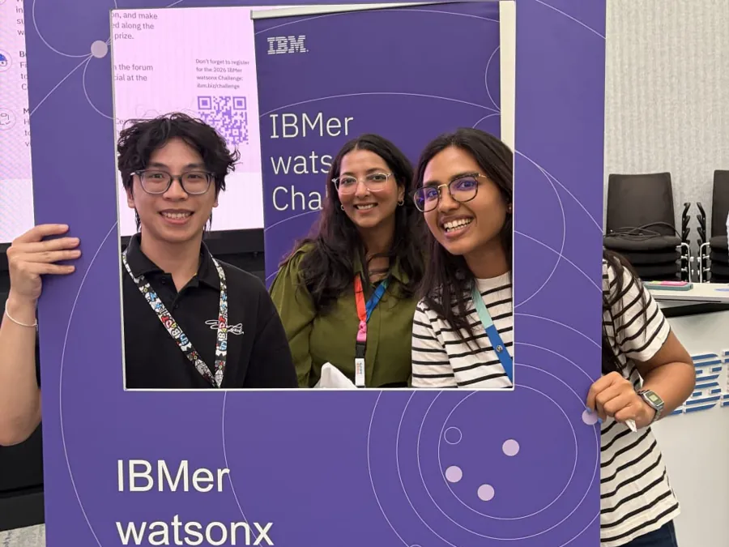
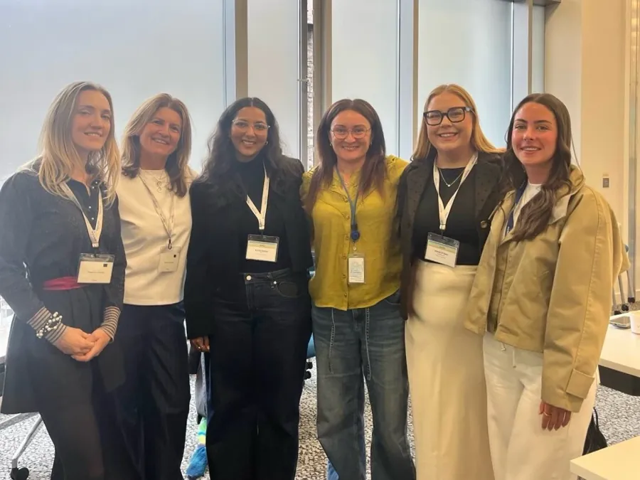

Studio Share · Host
The AI Shift panel
With my Studio Share team, Bintul, Kyle and Hera, I co-hosted a panel discussion on AI through the lenses of content, UX, product management, development and research.
Character profile
I'm a UX designer at IBM, designing Asset Lifecycle Management, an enterprise SaaS product built on deep, workflow-heavy journeys. I started in graphic design and marketing, then went deep on immersive tech at Trinity College Dublin, graduating with distinction. The through-line: in VR and in enterprise software alike, confusion is expensive. I research first, prototype fast, and design for attention.

20%
faster in-store branding across 30+ store launches at Blum
140+
social and exhibition assets shipped at Blum
1,000+
Instagram followers grown for Fruik in about 5 months
MSc
Interactive Digital Media, with Distinction, Trinity College Dublin
Playstyle
I start with the people closest to the problem. At IBM that means expert interviews and synthesis before a single screen.
AI-assisted tools and front-end code get a proof of concept in front of stakeholders early, so decisions come from something real.
VR taught me to design for where focus goes and what breaks flow. I bring that to dense, workflow-heavy software.
Quest log
UX Designer · Dublin
Mentor · HCI programme
Marketing Executive & Graphic Designer
Graphic & UX Designer
Design Intern
Marketing Intern
Guilds
Beyond the day job: hosting, mentoring and showing up.

Studio Share · Host
With my Studio Share team, Bintul, Kyle and Hera, I co-hosted a panel discussion on AI through the lenses of content, UX, product management, development and research.

Studio Share · Team
I'm part of the Studio Share team with Bintul, Kyle and Hera. Together we hosted the AI Shift panel.

IBM · Participant
Took part in IBM's internal watsonx Challenge.

CWIT · Networking
Joined CWIT networking events on self-advocacy, meeting people from different tech companies.
Training
MSc Interactive Digital Media · 2024–2025
Thesis: The Future of VR Esports: Building VR-Exclusive Games and What Makes Them Olympic-Ready. Read the case study
Awarded with DistinctionBTech Computer Science + MBA Marketing · 2016–2021
MBA minor in Strategy and Innovation Management.
Abilities
Go on, drag them around.
Inventory
Hover or focus a tile to see how I use each tool.

Digital illustration, sketching and concept art.

Creating interactive, branching narratives and choice-driven stories.

3D modeling, texturing and animation for interactive, VR projects and advertising.

Recording, editing and mixing audio for games, videos and installations.

Wireframes, UI design and interactive prototypes.

Structuring responsive, accessible web experiences.

Styling layouts, motion and responsive interfaces.

Adding interactivity and logic to web experiences.

Building interactive, VR and game experiences with the XR Toolkit.

Vector illustration, icons and brand assets.

Image editing, compositing and visual design.

Motion graphics and animated content.
Dialogue
I have evolved from graphic design into UX, with a focus on AI-powered products and complex, workflow-driven tools. Right now I am at IBM designing for an enterprise SaaS product. I am drawn to work that sits somewhere between utility and storytelling, and my background in immersive tech means I think a lot about attention, flow, and how people experience the things we design.
I use AI mostly to move faster through the parts of the process that benefit from compression: synthesising research, drafting copy variations, exploring early prototypes, and sanity-checking my own thinking. I treat it as a collaborator, not a shortcut. The interesting design questions are usually about when and how to put AI in front of a user, not just whether to use it.
I am currently in Dublin, working as a UX designer at IBM. I am an Indian citizen relocating to Bengaluru, and open to on-site, hybrid or remote roles there. I am also comfortable with US or UK time zones if a remote-first team needs the overlap.
I started in graphic design and marketing, and kept finding myself more interested in the why behind the work than the surface of it. I loved the problem-solving side, and the idea that good design tailors itself to humans instead of asking humans to learn the product. My MSc at Trinity let me go deeper into that thinking, and immersive tech gave me a strong respect for how much design shapes the way people experience anything digital. UX was where all of it came together.
VR forces you to design for attention, spatial logic and cognitive load in ways flat screens let you skip. Working on immersive projects taught me to think carefully about how people move through an experience, where their focus goes, and what happens when something unexpected breaks their flow. All of that translates directly to designing complex digital workflows. It also gave me real comfort prototyping in 3D tools and front-end code, so I can build closer to what I design.